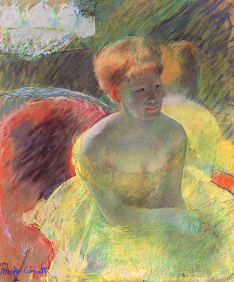

Techniques
French painters who prepared the way for Impressionism include the Romantic colourist Eugène Delacroix, the leader of the realists Gustave Courbet, and painters of the Barbizon school such as Théodore Rousseau. The Impressionists learned much from the work of Johan Barthold Jongkind, Jean-Baptiste-Camille Corot and Eugène Boudin, who painted from nature in a direct and spontaneous style that prefigured Impressionism, and who befriended and advised the younger artists.
A number of identifiable techniques and working habits contributed to the innovative style of the Impressionists. Although these methods had been used by previous artists—and are often conspicuous in the work of artists such as Frans Hals, Diego Velázquez, Peter Paul Rubens, John Constable, and J. M. W. Turner—the Impressionists were the first to use them all together, and with such consistency.
These techniques include:
- Short, thick strokes of paint quickly capture the essence of the subject, rather than its details. The paint is often applied impasto.
- Colours are applied side by side with as little mixing as possible, a technique that exploits the principle of simultaneous contrast to make the colour appear more vivid to the viewer.
- Greys and dark tones are produced by mixing complementary colours. Pure impressionism avoids the use of black paint.
- Wet paint is placed into wet paint without waiting for successive applications to dry, producing softer edges and intermingling of colour.
- Impressionist paintings do not exploit the transparency of thin paint films (glazes), which earlier artists manipulated carefully to produce effects. The impressionist painting surface is typically opaque.
- The paint is applied to a white or light-coloured ground. Previously, painters often used dark grey or strongly coloured grounds.
- The play of natural light is emphasized. Close attention is paid to the reflection of colours from object to object. Painters often worked in the evening to produce effets de soir—the shadowy effects of evening or twilight.
- In paintings made en plein air (outdoors), shadows are boldly painted with the blue of the sky as it is reflected onto surfaces, giving a sense of freshness previously not represented in painting. (Blue shadows on snow inspired the technique.)
New technology played a role in the development of the style. Impressionists took advantage of the mid-century introduction of premixed paints in tin tubes (resembling modern toothpaste tubes), which allowed artists to work more spontaneously, both outdoors and indoors. Previously, painters made their own paints individually, by grinding and mixing dry pigment powders with linseed oil, which were then stored in animal bladders.
Many vivid synthetic pigments became commercially available to artists for the first time during the 19th century. These included cobalt blue, viridian, cadmium yellow, and synthetic ultramarine blue, all of which were in use by the 1840s, before Impressionism. The Impressionists' manner of painting made bold use of these pigments, and of even newer colours such as cerulean blue,[4] which became commercially available to artists in the 1860s.

The Impressionists' progress toward a brighter style of painting was gradual. During the 1860s, Monet and Renoir sometimes painted on canvases prepared with the traditional red-brown or grey ground.[26] By the 1870s, Monet, Renoir, and Pissarro usually chose to paint on grounds of a lighter grey or beige colour, which functioned as a middle tone in the finished painting.[26] By the 1880s, some of the Impressionists had come to prefer white or slightly off-white grounds, and no longer allowed the ground colour a significant role in the finished painting.